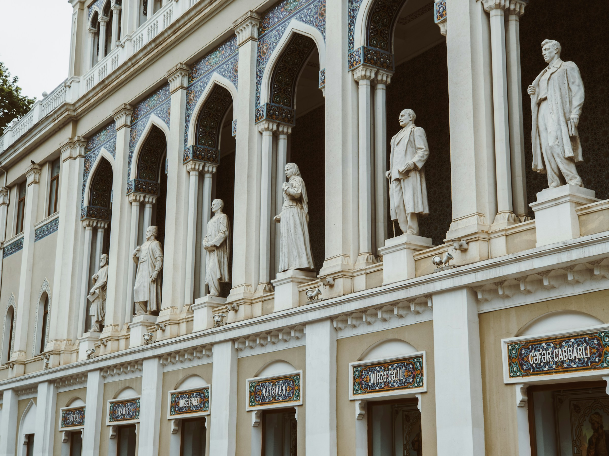
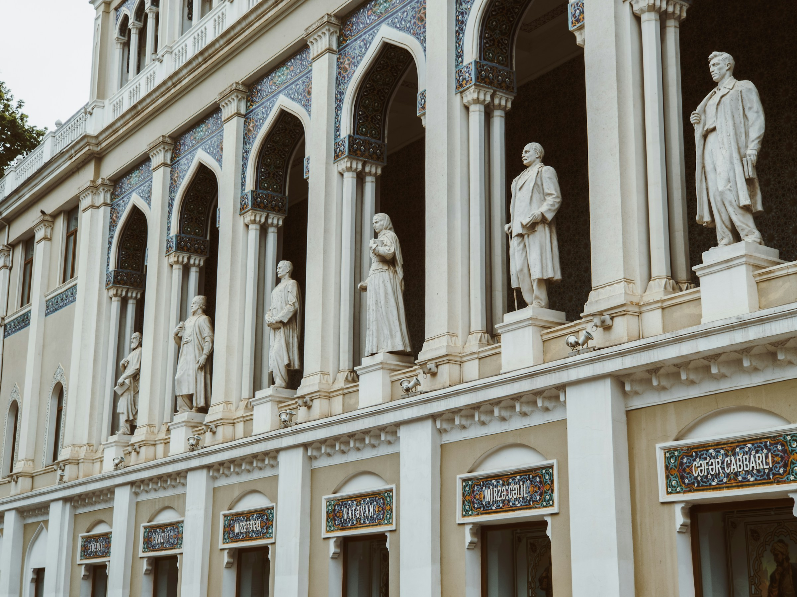

Discover Azerbaijan
Nestled between the Caspian Sea and the Caucasus Mountains, Azerbaijan beckons with its enchanting blend of natural wonders and rich cultural tapestry. With diverse landscapes ranging from lush valleys to snow-capped peaks, the country captivates adventurers and nature enthusiasts alike. The warmth of Azerbaijani hospitality is reflected in its vibrant culture, where ancient traditions coalesce with modern influences. The Azerbaijani people, known for their warmth and friendliness, embody a proud heritage that celebrates music, dance, and an exquisite cuisine highlighted by aromatic teas and local delicacies. Explore this gem of the South Caucasus, where history, hospitality, and breathtaking scenery converge.


 
